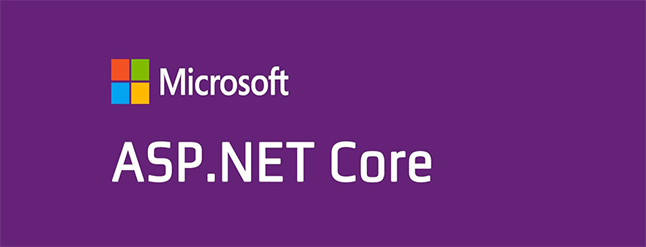
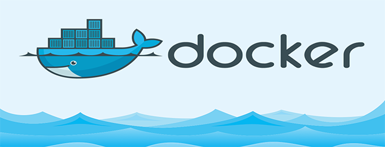

Introduction to .NET
.NET is a free, cross-platform, open source developer platform for building many different types of applications from Microsoft. With .NET, you can use multiple languages, editors, and libraries to build for web, mobile, desktop, gaming, and IoT.
The .NET Framework has been developed to cater to the following objectives and requirements:
- To provide a consistent object-oriented environment to develop applications.
- To provide a code execution environment that simplifies deployment and versioning.
- To provide a code execution environment that guarantees the safety of the code that is executing. This includes both code developed internally by an organization or for code developed by 3rd party vendors.
- To provide a code execution environment that eliminates the issues faced by scripted environments with respect to performance.
- To provide a common programming model where the choice of a programming language becomes a matter of choice.
Here is a quick guide from Microsoft about how to install and build your first console application! Click here!
If you want to know more about .NET i recommend you to read this articles:
- From Microsoft: What is dotnet?
- From CodeProject: What is NET?
Introduction to .NET Core
.NET Core is a general purpose development platform maintained by Microsoft and the .NET community on GitHub. It is cross-platform, supporting Windows, macOS and Linux, and can be used in device, cloud, and embedded/IoT scenarios.
The following characteristics best define .NET Core:
- Flexible deployment: Can be included in your app or installed side-by-side user- or machine-wide.
- Cross-platform: Runs on Windows, macOS and Linux; can be ported to other OSes. The supported Operating Systems (OS), CPUs and application scenarios will grow over time, provided by Microsoft, other companies, and individuals.
- Command-line tools: All product scenarios can be exercised at the command-line.
- Compatible: .NET Core is compatible with .NET Framework, Xamarin and Mono, via the .NET Standard Library.
- Open source: The .NET Core platform is open source, using MIT an Apache 2 licenses. Documentation is licensed under CC-BY. .NET Core is a .NET Foundation project.
- Supported by Microsoft: .NET Core is supported by Microsoft, per .NET Core Support
So.. if i want to start to develop a project.. Wich of them is the choosen one..?
Well.. you will choose .NET Core when your application in server side are going to be cross-platform, targeting microservices, using Docker containers (keep reading to know what is Docker!) or when you need a high-performance and scalable systems.
And you are going to use .NET when you currently hace a .NET app running, when you have to use some packages that are not available yet in .NET Core, or you are using a platform that doesn't support .NET Core.
Want to read more about .NET Core?: Click here!
Docker
Docker is a platform that allows you to create portable and lightweight container to build, deploy, and run your applications. It can be installed in almost every SO. Docker is a bit like a virtual machine. But unlike a virtual machine, rather than creating a whole virtual operating system, Docker allows applications to use the same kernel as the system that they're running on and only requires applications be shipped with things not already running on the host computer.
Benefits of using Docker:
- Reproducibility: The exact specifications of a container are stored in a Dockerfile. By distributing this file among team members, an organization can guarantee that all images built from the same Dockerfile will function identically.
- Isolation: Dependencies or settings within a container will not affect any installations or configurations on your computer, or on any other containers that may be running.
- Security: Separating the different components of a large application into different containers can have security benefits: if one container is compromised the others remain unaffected.
- Compatible: .NET Core is compatible with .NET Framework, Xamarin and Mono, via the .NET Standard Library.
- Environment Management: You can have a separate container for testing, development, and production on the same Linode and easily deploy to each one.
- Open Source
Docker have two options for using the tool, one is the COMMUNITY EDITION and the other is ENTERPRISE EDITION. First is for small teams or people who wants to get started with the tool and buil their own container apps, the enterprise edition have more features than the community, like private support channels, certifieds, monitoring, more OS supported, etc.
More information about Docker Here!